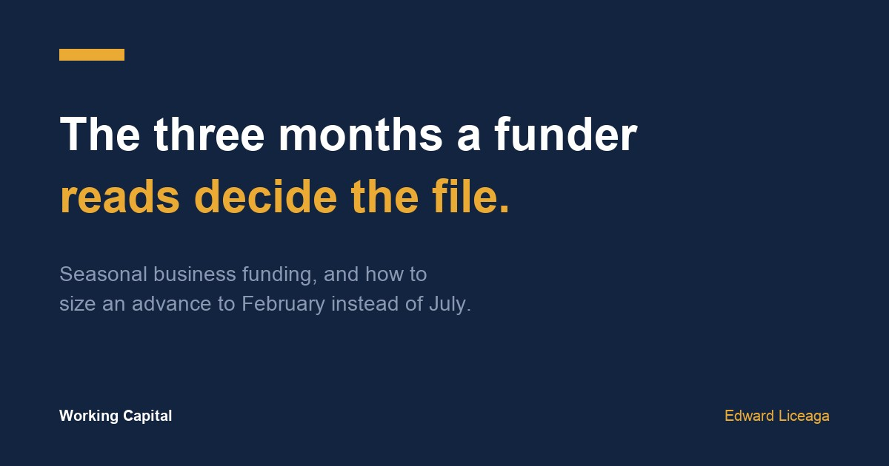

Seasonal Business Funding: The Three Months a Funder Reads Decide the File
A seasonal business can have a strong year and a weak quarter. The file only shows the quarter.

A pool company, a landscaper, and a holiday retailer can each have a good year and still look thin on a funding file. Most files are built on about three months of bank statements. For a seasonal business, which three months those are changes the read more than anything else on the application.
That makes seasonal business funding mostly a timing problem, because a July statement and a February statement describe the same business very differently.
What a three month read sees
Underwriting reads deposits by month, the average daily balance, any days the account went negative, and the fixed debits already going out. I went through each of those in what underwriters look for in bank statements.
In a slow season the deposits drop while rent, insurance, and equipment payments stay where they were. The balance runs lower, and a negative day or two shows up around the bills, even though the business itself is running the way it always does in winter.
Here is an example with round numbers, not a client file. A pool service brings in about $50,000 a month from May through August and about $20,000 a month the rest of the year. That is roughly $360,000 for the year, or $30,000 a month on average. Read June through August, it looks like a $50,000 a month business. Read December through February, it looks like a $20,000 a month business. Neither read is the average, and the average is not what gets read.
Pick the window on purpose
Most owners send the three most recent statements because that is what the form asks for. A seasonal business should first ask which months the funder will actually read.
Then look at the calendar. If you are coming out of your slow stretch, the first strong month posting to your statement may change the file more than anything you write on the application. If you are heading into the slow stretch, the strong months are still in the window today and will start dropping out of it soon.
Also ask whether the funder will read a longer history, or last year's same months next to this year's. Some will and some will not. It costs one question to find out.
Size it to February
An advance has a fixed payment schedule, usually daily or weekly, set when you sign. It keeps running in the slow months at the same amount it ran in the busy ones.
So the test for a seasonal business uses its worst stretch. Take the payment, put it against a slow month's account after rent and payroll, and see whether it still fits with room to spare. If it only fits in July, the amount is sized to the peak, and the slow season will be carrying it. The weekly version of that test is in how much funding can my business get.
That usually means taking less than a peak month would justify. It also means the first advance builds a clean payment record through a slow stretch, which is the record a renewal gets priced on. I covered that in merchant cash advance renewal.
Time the request to the use
Seasonal capital usually pays for something ahead of the season: stock before the holidays, equipment and crew before spring, repairs before reopening. The useful order is to plan the purchase, check which months your file will show, and apply while the window still reflects the business you are funding.
The weaker position is applying after the slow season has already drained the account, for a purchase that needed to happen weeks earlier. The file reads worse and there is less time to compare offers.
Write the seasonality down
A short note with the application helps. Say which months are your peak, what a normal slow month looks like for you, and how last year's same months compared. A drop that is explained up front reads as a pattern. The same drop with no explanation can read as a decline.
Keep it to a few lines and stick to numbers your statements can confirm.
What makes a slow season worse
Taking a second advance in the slow months to cover the first is the most common mistake. Two fixed debits against the smallest deposits of the year is how a seasonal dip turns into a real cash problem, and it shows up on the next file as stacking.
The other is taking capital to cover a slow season that is slower than last year's for reasons the money will not fix. If the season is shrinking, more capital does not change that, and the honest answer is a smaller plan.
The short version
Seasonal business funding comes down to which months get read and whether the payment survives your slowest one. Ask about the window, apply while it reflects the business you are funding, explain the seasonality in a short note, and size the advance to February.
If you are planning ahead of a season, the application is one page and three months of statements: https://ccapsolution.com/apply/?agent=edward.liceaga
May qualify, subject to approval. Terms, amounts, and timing vary by file. The figures above are an illustrative example, not a client file or an offer. A merchant cash advance is the purchase of future receivables, not a loan. I am an independent funding partner and earn on funded referrals.